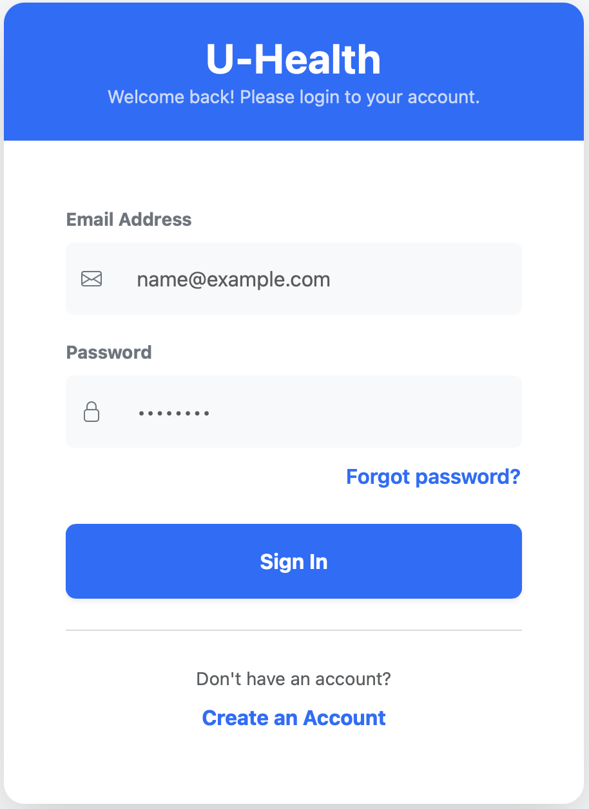
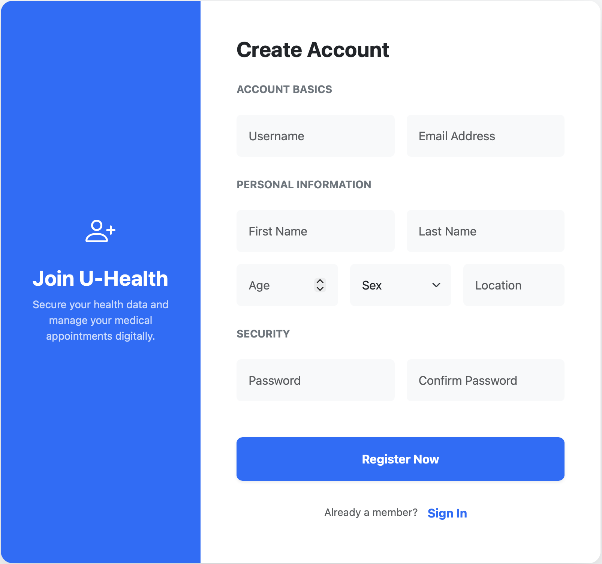
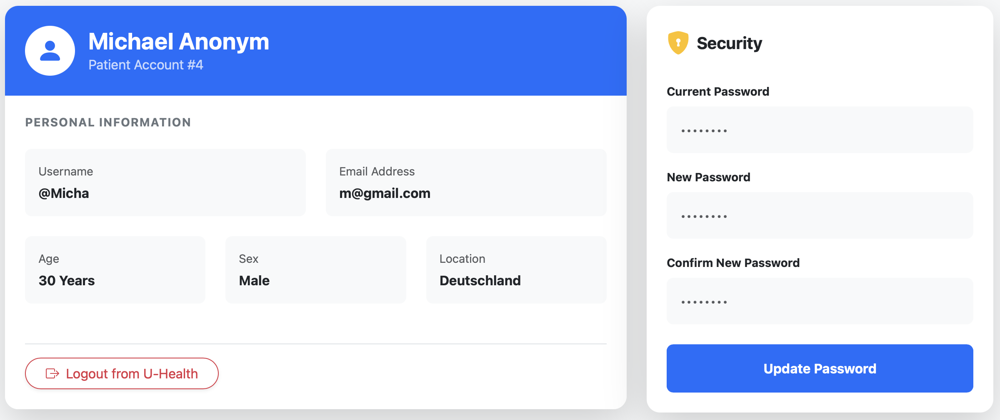
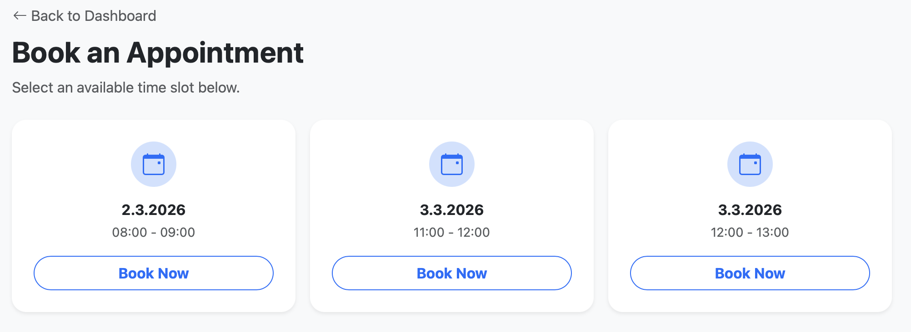
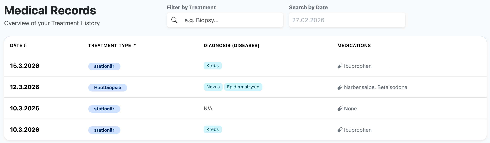

U-Health Patient Interface - v0.0.0
U-Health – Patient Management System (Frontend)
U-Health is a professional-grade Single-Page Application (SPA) designed to digitize the patient experience. It allows users to securely manage medical appointments and track treatment histories through a modern, responsive interface.
Project Metadata
-
Patient/User Frontend Developed by: Christopher Herlitz
-
Admin Frontend Developed by: Evin Yilmaz
-
Backend Developed by: Sebastian Kohrell, Muhammed Emir Akgül, Paul Lopatin
-
Submission Date: 28th February 2026
-
University: [Universität Tübingen]
-
Course: [Praktische Informatik 4 - Teamprojekt]
Technical Architecture
The application follows a modern decoupled architecture where the Frontend acts as a standalone client communicating with a RESTful API.
Core Stack
- Framework: Vue 3 (Composition API) with Vite for optimized building.
- Language: TypeScript for strict typing and interface definitions.
- Styling: Bootstrap 5 for responsive UI components and customized CSS for medical branding.
- State & Logic: * Vue Router: Manages navigation, dynamic route matching for password resets and route-based access control.
- Axios: Centralized HTTP client with interceptors for Bearer Token injection.
- FullCalendar: Integrated library for interactive patient scheduling.
Security Implementation
Security is a core pillar of the U-Health interface:
- Token-Based Authentication: Uses Laravel Sanctum Opaque Tokens. Tokens are stored in
LocalStorageand managed via an Axios Request Interceptor. - Password Recovery Flow: Implements a secure double-gate reset system (Email trigger -> Secure Tokenized Link -> Password Update).
- Navigation Guards: Protected routes (Dashboard, Profile, History) are guarded. Unauthorized access attempts automatically redirect to the login page.
- Data Sanitization: Strict TypeScript interfaces ensure that only validated data structures are rendered in the UI.
- Session Persistence: Automatic cleanup of local session data upon logout or 401 (Unauthorized) server responses.
Installation & Setup
To run the application locally, follow these steps to initialize both the database and the frontend.
1. Prerequisites
- Clone U-Health-BE and U-Health-FE in your chosen local directory
- PHP (v8.2+) & Composer
- Node.js (v18+) & npm
- MySQL & Mailtrap
2. Backend Initialization (Laravel)
-
Navigate to the backend directory.
-
Run MySQL-Client anc create database:
mysql -u root
mysql> SHOW DATABASES;
mysql> create DATABASE u_health_db;
mysql> use u_health_db; -
Open a new Terminal Tab for PHP
-
Install dependencies:
cp .env.example .env
composer install
php artisan key:generate -
Run migrations in the database:
php artisan migrate
php artisan config:clear -
Start the server:
php artisan serve -
Configure your
.envfile with your MySQL credentials:APP_URL=http://localhost:8000
FRONTEND_URL=http://localhost:5173
DB_CONNECTION=mysql
DB_HOST=127.0.0.1
DB_PORT=3306
DB_DATABASE=u_health_db
DB_USERNAME=root
DB_PASSWORD=
# Add your Mailtrap Sandbox credentials here
# e. g.:
MAIL_MAILER=smtp
MAIL_SCHEME=null
MAIL_HOST=sandbox.smtp.mailtrap.io
MAIL_PORT=2525
MAIL_USERNAME=<username>
MAIL_PASSWORD=<password>
MAIL_FROM_ADDRESS="u-health-team@example.com"
MAIL_FROM_NAME="LARAVEL"
3. Patient Frontend Initialization (Vue.js)
- Navigate to the
U-Health-FEfolder. - Install packages:
npm install - Run the development server:
The app will be accessible at http://localhost:5173npm run dev
User Guide
1. Landing Page

The public entry point showcasing U-Health's core value proposition.
-
Overview: The Home Page serves as the initial branding hub. It introduces users to the two main pillars of the app: Smart Scheduling and the Health Archive.
-
Navigation: Clear Calls-to-Action (CTAs) allow users to either enter the Portal (Login) or Join Now (Register).
-
Experience: It features micro-interactions and entrance animations to provide a modern, high-quality medical software feel.
2. Account Access & Security
The centralized login interface with integrated password recovery flow.
Account Creation: Detailed demographic and security fields ensuring accurate medical record synchronization.
-
Registration: New users must sign up via the
/registerpage. All fields (including demographic data) are required for medical record accuracy. -
Authentication: Log in to receive your session token. If you are already logged in, the system will automatically redirect you from the login page to your Dashboard.
-
Forgot Password:
1. Fill in your registered email.
2. Click "Forgot password?" on the Login page.
3. Receive a secure reset link via email (viewable in Mailtrap).
4. Click the link to be redirected to the Reset Password Page where you can safely set a new credential.
3. User Profile & Account Settings
Manage your personal data and security credentials.
- Personal Identity: The Profile page displays your unique Patient ID and demographic information.
- Security Settings: Change your password directly within the portal.
The system requires your current password to verify your identity before allowing an update. - Session Management: Securely log out to clear all local tokens and end your active session.
4. Dashboard & Calendar

Interactive calendar view: Click on blue Slots to cancel existing appointments.
- The Dashboard provides an immediate overview of your medical schedule.
- Blue Slots: Represent your confirmed upcoming appointments.
- Cancellation: Click on an existing appointment in the calendar to remove it from your schedule.
5. Booking Appointments
Shows you available Timeslots.
- Navigate to the Booking section by clicking "New Appointment".
- The system filters and displays only available time slots.
- Click "Book Now" to instantly reserve a slot. After confirming you will be redirected to the Dashboard.
6. Treatment History
Gives an overview of your recent treatments with searching and filtering options.
-
Show Archive: View all past visits in the "History" tab.
-
Hybrid Filtering:
- Search by Treatment: Use the text bar to filter by treatment type.
- Search by Date: Use the date picker to perform a server-side query for specific consultation dates.
-
Details: Each row displays medical data:
- Diseases: All diagnosed conditions are shown as badges.
- Medications: Lists all prescribed drugs.
-
Sorting: Click table headers Date or Treatment Type to sort records chronologically or alphabetically.
Directory Structure
src/
├── api/ # api.ts (Axios configuration & Interceptors)
├── components/ # Vue components (Login, Dashboard, Treatment History, etc.)
├── router/ # index.ts (Route definitions & Navigation Guards & Dynamic Reset Routes)
└── App.vue # Root component with dynamic Navigation Bar logic